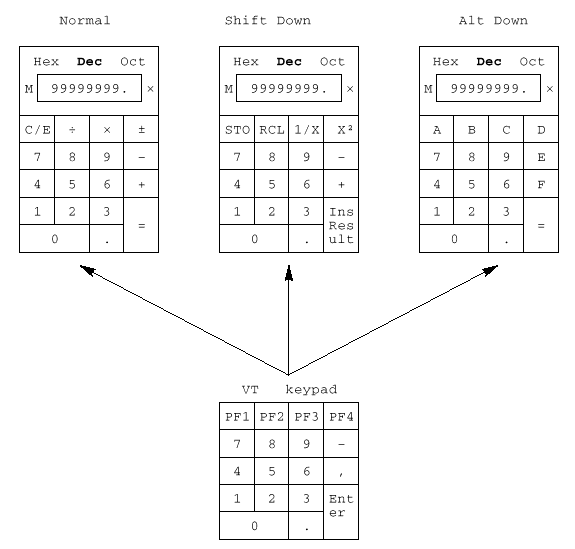
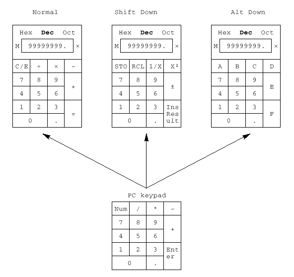
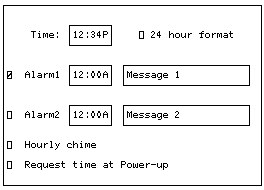

3.1 Introduction
To enhance productivity, the VT510 provides three local functions that can be used at any time the terminal is powered up, even when the terminal is not connected to a host. These functions are:
- Calculator
- Clock
- Character Set Tables
This chapter describes these programs and their interaction with the terminal. The local functions can be accessed through Set-Up or through a user-programmable key combination. Chapter 2, Terminal Set-Up, describes how to invoke these programs and how to assign a key combination to a program. When one of these programs is invoked, the screen is partially obscured by that program. Pressing Ctrl/Z , F10 (Exit), or ESC exits the current program and reveals the entire screen contents.
3.2 Calculator
You can enable the Calculator function in Set-Up by pressing Caps Lock Alt/F12 if you are not in an ASCII emulation mode.
When you select the Calculator function, the terminal displays a simple calculator. See the leftmost layout in Figures 3–1 and 3–2. The keypad keys map directly to the calculator keys. The layout depends on whether a VT or Enhanced PC keyboard is attached, and whether a modifier key (Shift or Alt) is currently held down.
When a keypad key is pressed, the corresponding key is highlighted (shown in reverse video) on the screen. If a modifier key is pressed down, the display changes to show the new keypad assignment. See the two rightmost layouts in Figures 3–1 and 3–2. All keys not associated with the calculator are ignored.
 |
In addition to the numbers on the numeric keypad, you can use the following keys with the calculator:
| Key | Function |
|---|---|
| H, O,or D | Select hexadecimal, octal, or decimal modes, respectively. |
| Arrow keys | Move the position of the calculator on the screen. |
| Shift | Changes the keypad display to allow you to select STO, RCL, 1/x, X², and Insert Result (Shift/Enter). |
| Alt | Changes the keypad display to hexadecimal and allows you to select keys A through F on the numeric keypad. |
| C/E | Clears the entry. |
| STO | Stores the number from the display in memory. |
| RCL | Recalls the number from memory and places it in the display. |
| Shift/Enter (Insert Results) | Inserts the result at the current cursor position after exiting the calculator feature. |
 |
Some keys on the main keypad can also be used for calculator functions:
| Main Keypad Key | Calculator Function |
|---|---|
| + | , (VT keyboard); + (PC keyboard) |
| - | - |
| * | × |
| / | ÷ |
| = | same as Enter |
| . | . |
| ⌫ | C/E |
While the calculator is on the screen, all other terminal operations are suspended. The first time the calculator is invoked after the terminal is powered on, the display and memory registers contain 0. The display is eleven characters wide: eight characters are used to display the number's digits, one is used for the decimal point, one for the leading sign bit, and the one in the rightmost position is left blank.
The calculator allows the user to add, subtract, multiply, and divide real numbers in the range [-99,999,999. through +99,999,999.]. While one of these operations is in progress, the calculator displays the corresponding symbol [+ - × ÷]to the right of the display. (See the × in the figures.) You can also compute the reciprocal or the square of a number by pressing the 1/X or X² keys, respectively.
All calculator math operations have equal priority except 1/X and X². If a result is wider than the display, then a rounded number will be displayed. The nonrounded result will continue to be used in subsequent calculations.
The calculator has a memory register in which an intermediate result can be stored. When you press STO, you replace the content of this register with the number in the display. When you press RCL, you place the number from memory in the display. If any value is stored in memory, the calculator displays the letter M to the left of the display.
The number in the display (usually the last result) can be inserted at the current cursor position by pressing Shift/Enter (Insert Result), which exits the calculator and transmits the data to the host.
The calculator can also be used with hexadecimal and octal numbers in addition to the default (decimal). The H, O, or D keys put the calculator in hexadecimal, octal, or decimal modes, respectively. The current mode is in plain text and the other two modes are displayed with the dim attribute. In hexadecimal mode, the numbers A through F are entered by holding down Alt and typing the corresponding keypad key. See Figures 3–1 and 3–2. The decimal point cannot be used in the hexadecimal or octal modes, and any fractional part is truncated in these two modes.
3.3 Clock
The current time is displayed in the status line, if this feature is enabled. If the 12-hour format is selected, an A or P is displayed after the minutes.
The Clock function allows the current time to be set, the hourly chime to be enabled or disabled, and the alarms to be set and armed or disarmed. The current time can also be set from the host through an escape sequence. When the clock function is selected, the window shown in Figure 3–3 is displayed on the screen.
 |
The following keys have these functions:
| Key(s) | Function |
|---|---|
| ⇓ and Tab | Move the cursor to the next text field or check box. |
| ⇑ and Shift/Tab | Move the cursor to the previous text field or check box. |
| ⇐ and ⇒ | Move the cursor inside a text field. |
| Return and Enter | Toggle the state of the check box. |
| ⇐ and ⇒ | Move the cursor inside the current input field. To change the contents of a field, type in the new information. |
| A or P | If the 24-hour time format is selected, these keys are ignored. If the 12-hour time format is selected, sets the time to either AM or PM. |
You do not need to type the colon (:) character in the time field; the cursor skips over that character position. The check boxes next to the alarms are used to enable or disable the alarms. When an alarm time comes due and the alarm is enabled, the terminal sounds the alarm for 5 seconds or until you type any key.
The terminal also flashes "Alarm1" or "Alarm2" in the error line and the corresponding message associated with the alarm. The maximum size of the alarm messages is 20 characters. When the alarm is cleared (either by typing a key or after the 5 second timeout), the error line also disappears, revealing the status line if it was enabled.
If the hourly chime check box is enabled, the terminal emits a double beep every hour on the hour.
The state of the alarms, the alarm times, and the alarm messages are saved in NVM if the user chooses Save settings from Set-Up.
3.4 Character Set Tables
When you select Show character sets, the current character set is shown on the screen. Nonprinting characters are shown in control representation mode wherever possible. The following keys have these functions:
| Key(s) | Function |
|---|---|
| Arrow keys | Highlight (reverse video) any character in the table. The corresponding 8-bit code is displayed in hexadecimal, decimal, octal and binary modes. |
| Shift/Enter | Inserts the highlighted character at the current cursor position. Note that this only works with the current character set. |
| Next Screen and Prev Screen or Page Up and Page Down |
Cycle through the available character sets. |
| Shift/L | Displays the line drawing character set. |
| Shift/T | Displays the technical character set. |
ASCII terminal emulations support the character sets listed in Table 3–1. They do not support any 8-bit or ISO standard character sets.
| Emulation Mode | Character Set |
|---|---|
| WYSE 160/60 Native | Native/WY-50+ |
| WYSE 160/60 PCTerm | PC Multilingual (Code Page 850) |
| WYSE 50+, 150/120 | Native/WY-50+ |
| TVI 950, 925, 910+ | Native/WY-50+ |
| ADDS A2 | Native/WY-50+ |